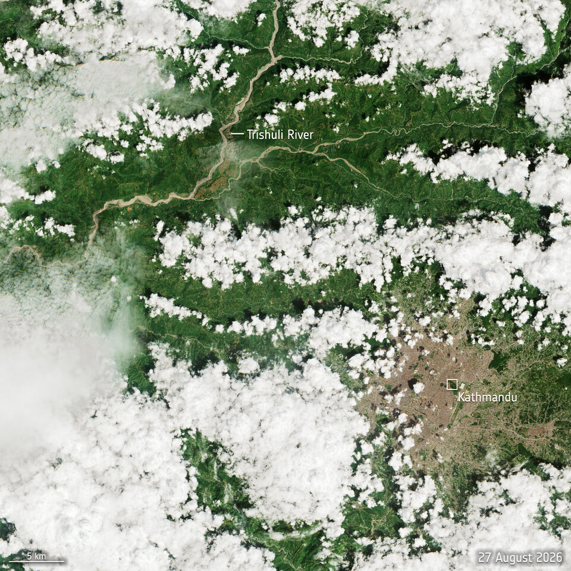
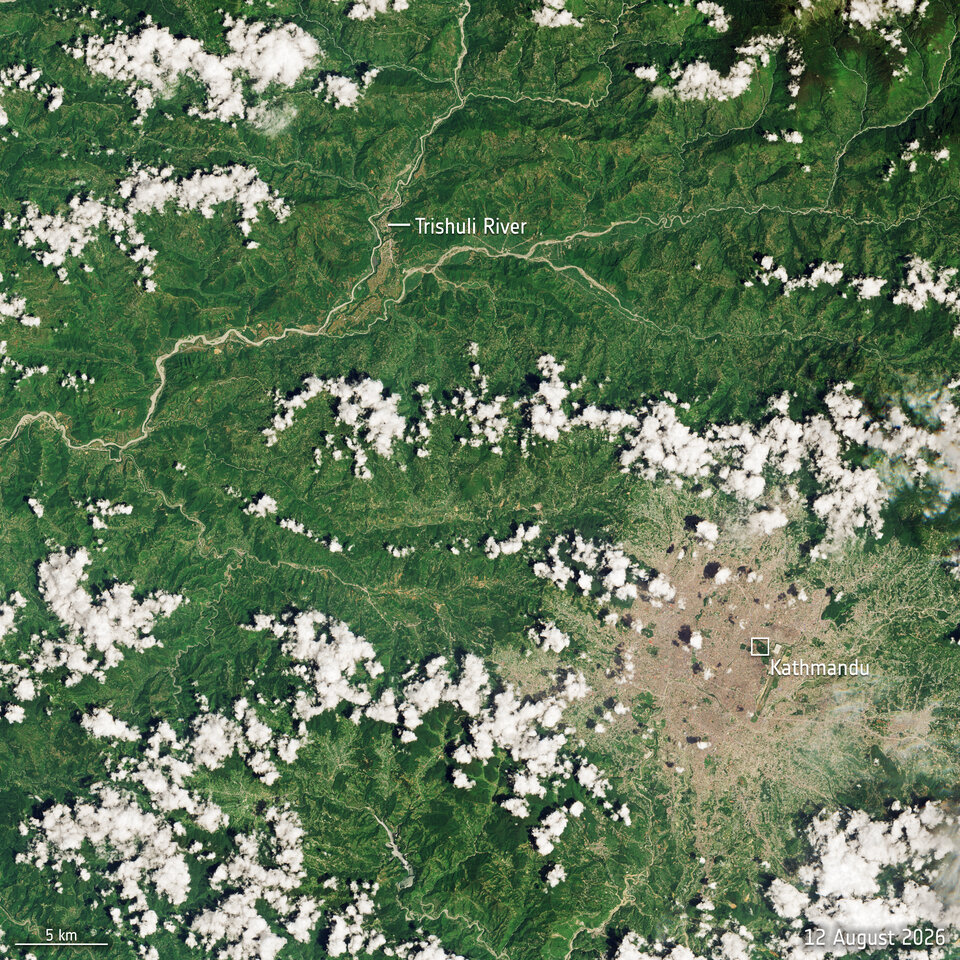

네팔상황실 · 2026년 8월 26일 홍수GPT-6 Astra로 자료 분석·모델 설계
네팔 홍수, 도움이 필요한 곳
위성 사진으로 홍수 전후를 살펴보고, 피해 지역에 어떤 도움이 필요한지 확인하세요.
자료 확인 2026.09.05 · 보테코시·트리슐리강 유역
출처 보기
위성으로 본 홍수 전후
ESA · Sentinel-2


위성 사진을 불러오지 못했습니다. 아래 ESA 원문에서 확인할 수 있습니다.
트리슐리강 유역의 실제 위성 사진입니다. 구름에 가린 곳은 확인하기 어려우며, 사진만으로 피해 가구 수나 지원 순위를 판단할 수는 없습니다.
Contains modified Copernicus Sentinel data (2026), processed by ESA. ESA 원문 · CC BY-SA 3.0 IGO
01 / 피해 현황
깨끗한 물과 위생 지원이 필요합니다
아동 수와 가구 수는 서로 다른 집계입니다. 지원 물품을 보냈다는 보고만으로 실제 지원을 받은 가구 수를 알 수는 없습니다.
지역별 지원 순위는 추가 확인이 필요합니다지역마다 피해 규모와 실제 지원을 받은 가구 수를 같은 기준으로 확인해야 순위를 비교할 수 있습니다. 자료가 부족하다고 도움이 덜 필요한 것은 아닙니다.
02 / 지역별 상황피해 상황과 필요한 확인
공개 보고서에 피해가 언급된 6개 지역입니다. 이 밖에도 피해지역이 있을 수 있으며, 아래 순서는 피해 규모와 관계없습니다.
지역별 자료 내려받기 (JSON) ↓지원 순위 계산에 필요한 자료
— 는 아직 확인되지 않은 항목입니다. 조사 결과가 없는 경우와 실제로 0가구인 경우를 구분합니다.
공개 자료에서 확인한 지역별 가구 수| 지구 | 홍수 영향 | 거주 불가 | 지원 필요 | 지원 완료 | 취약 |
|---|
03 / 지원 우선순위 기준어디부터 지원할지 살펴보는 세 가지 기준
주거 피해, 아직 받지 못한 지원, 취약가구 비율을 함께 봅니다. 점수는 지원 논의를 돕는 참고값이며, 실제 지원은 현장 상황을 확인해 결정합니다.
지원 우선순위 모델 A
D주거 피해 심각도
주거 불능 가구 ÷ 영향 가구
홍수의 영향을 받은 가구 중 집에 거주할 수 없게 된 가구의 비율입니다.
U식수·위생 지원 공백
(필요 − 지원 완료) ÷ 필요
지원이 필요한 가구 중 정해진 식수·위생 지원을 아직 받지 못한 비율입니다.
V취약가구 비율
취약가구 ÷ 지원 필요 가구
아동·고령자·장애인·임산부 등이 있는 가구를 살펴봅니다. 기준은 현지 파트너와 정하고, 같은 가구는 한 번만 셉니다.
우선순위 점수 = 100 × (wD D + wU U + wV V)기본 설정은 세 항목의 비중이 같습니다. 아래에서 비중을 바꿔 볼 수 있습니다.
해석 원칙과 모델의 한계
- 모든 값은 같은 기준일·평가구역·가구집단에서 집계합니다. 지원 완료와 취약가구는 지원 필요 가구의 부분집합입니다.
- 물품 발송·진료 건수는 실제 지원 완료 가구 수가 아닙니다. 최소 식수·위생 지원 기준과 수령 기록을 먼저 대조해야 합니다.
- 필수 입력이 빠지면 점수·순위를 보류합니다. 남은 항목만으로 가중치를 다시 나누지 않습니다. 지원 필요가 없거나 모두 지원된 지역은 추가 지원 순위에서 제외합니다.
- 규모가 작은 지역도 높은 비율을 보일 수 있습니다. 점수와 함께 미지원 가구의 절대 수, 접근성, 현지 판단을 확인하세요. 점수 비율대로 예산을 나누지 않습니다.
- 가중치 4개 조합의 순위 범위는 정책 선택에 대한 민감도입니다. 통계적 신뢰구간이 아닙니다. 자료 누락에 따른 편향도 해소하지 못합니다.
- 관측 자료로 성능을 검증하거나 현장 결과로 보정한 예측 모델은 아닙니다. 현지 파트너 검토와 연구책임자의 확인 후 집행 판단에 사용합니다.
04 / 직접 계산해 보기지원 기준을 바꾸면 순위는 어떻게 달라질까요?
가구 수를 입력하고 세 기준의 비중을 조절해 보세요. 입력한 값으로 계산한 결과이며, 실제 피해 집계나 확정된 지원 순위는 아닙니다.
입력값으로 계산한 참고 결과입력한 내용은 서버에 저장되지 않으며, 새로고침하면 사라집니다. 이름이나 연락처 없이 가구 수만 입력하세요.
무엇을 더 중요하게 볼까요?
세 기준의 비중을 바꾸면 입력한 지역의 점수와 순위도 달라집니다.
지원 결정까지의 과정- 조사할 지역과 지원 기준 정하기
- 가구 수와 지원 내역 확인하기
- 점수와 미지원 가구 수 함께 살펴보기
- 현장 접근 방법을 확인하고 지원 결정하기
입력한 지역의 비교 결과
입력한 값으로 계산한 결과 · 자료가 갖춰진 지역끼리 비교합니다| 지구 | 상태 | 점수 / 100 | 순위 | 미지원 가구 | 기준을 바꿨을 때 순위 |
|---|
05 / 자료 출처어떤 자료를 참고했나요?
네팔 정부, 국제기구와 구호기관의 공개 보고서를 참고했습니다. 발표일과 조사 범위는 자료마다 다릅니다.